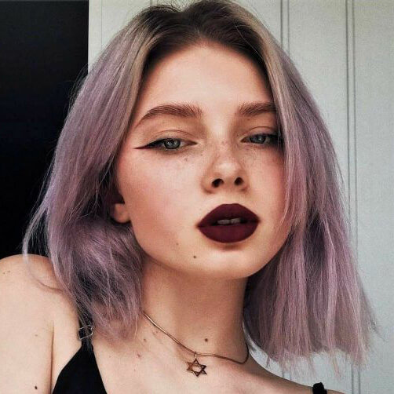
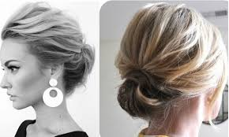
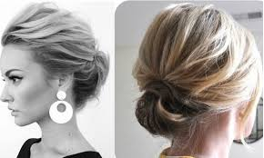
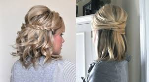
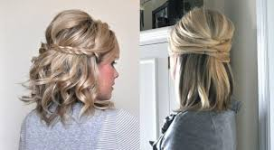

LOS MEJORES
PEINADOS PARA
PELO CORTO.
@Si quieres mas ideas visitanos o acude a nuestras fuentes de contacto.
RECOJIDOS
lindos
Mira alguos de nuestra seleccion de recogidos
 


SEMIRECOJIDO
Con trensas y sin trensas
Los semirecojidos los hacemos comunmente con la ayuda de pasadores, y en varias ocaciones de una plancha o rizadora

 


CASUALES
Bonitos
Siempre es bueno tener opciones peinados


Si tines alguna peticion, sugerencia o duda !Contactanos!